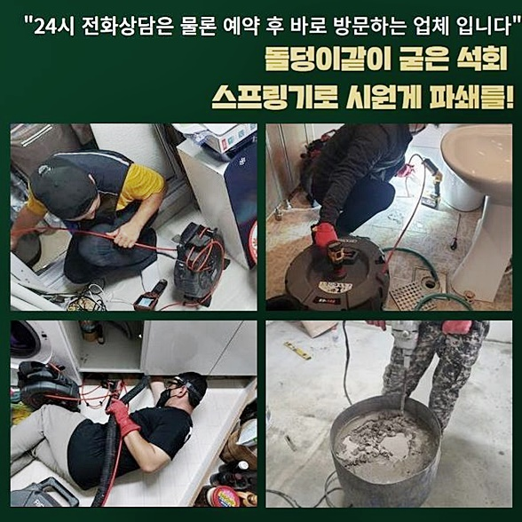
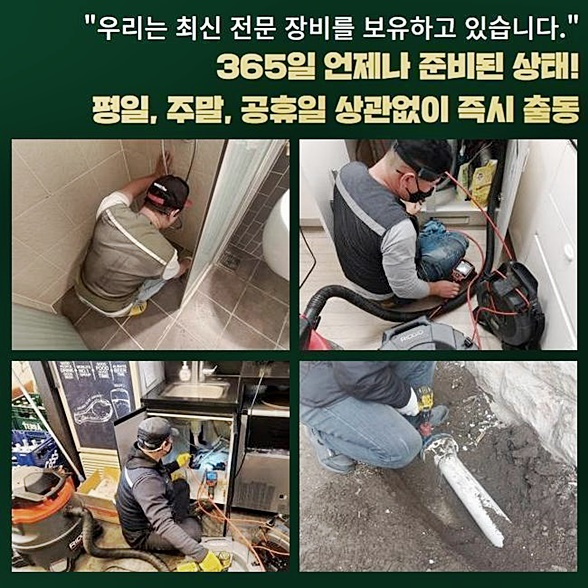
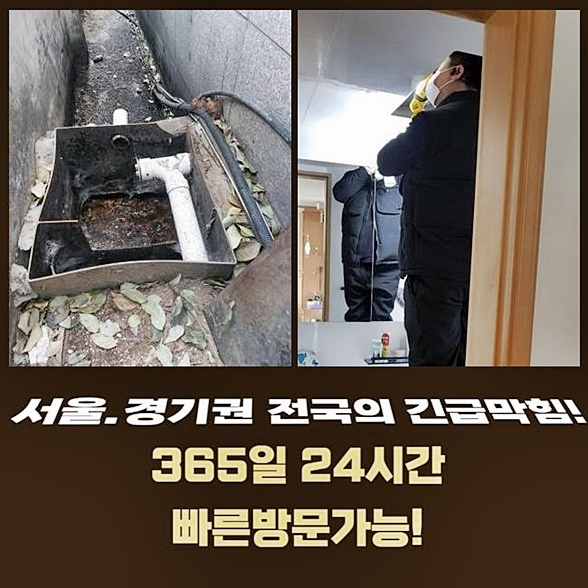
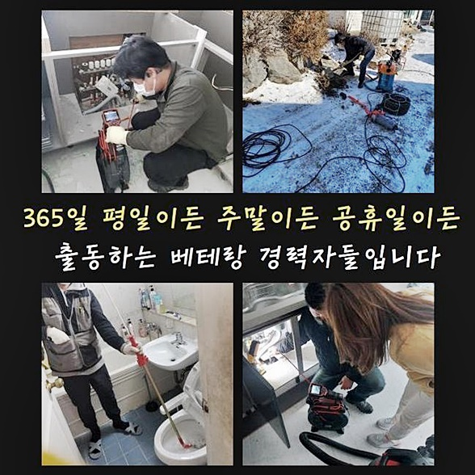
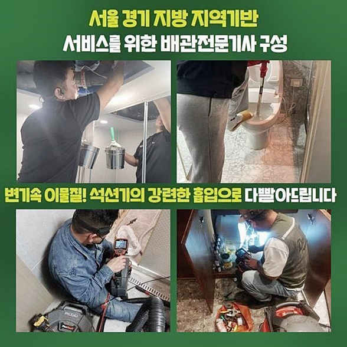

🏠 능곡동화장실뚫음 장곡동 하수구뚫는비용 누수탐지
용인 싱크대막힘 전문 시공 후기

📋 작업 개요
- 위치: 용인
- 서비스 유형: 싱크대막힘, 하수구막힘, 배관막힘, 누수수리, 역류해결, 뚫는업체, 배관청소, 고압세척
- 작업 일시: 2024. 8. 29. 18:26
- 업체명: 하수구수사대 (010-5615-2118)
🔍 문제 상황
능곡동화장실뚫음 장곡동 하수구뚫는비용 누수탐지
금일엔 연립주택에 사시는 의뢰자가 싱크대배관이 막히게 되었다고 해결을 요청하였죠
싱크대라 함은 사용을 할 때 조리 중에 음식찌꺼기나 기름들이 내부로 흘러가는 경우가 빈번히 발생됩니다
깊숙한 지점서 이물이 누적되며 물빠짐을 느리게 만듭니다
주기적으로 진단하고 세척을 진행하는게 중요하겠으나 신경써서 이해하는게 힘들기에 결함이 나타나게 될 시 서둘러 전문진들에게 문의해서 완화시키는게 좋답니다
문제장소에 당도해 내시경기기를 가용시켜 하수도의 상황을 봅니다
이곳처럼 막히게된 오류들이 발생되었다면 초입부터 하수들이 역류하게 될 가능성들이 높답니다
예측한 바대로 초입라인에서 고이게되어 확실한 오염물의 양상을 제대로 알기엔 쉽지 않은 상황이였어요
그리하여 입구부터 하수들을 청소하고 배수관을 내시경기기를 운용해주어 살펴보았습니다
입구부터 오수들이라던지 잔재들을 조속하게 사라지게할 때 석션기처럼 좋은게 없는데요
제 기능을 발휘한 뒤 잔해물을 빨아당겨 청소해요

🔎 원인 분석
💡 전문가 진단: 정밀 진단 장비를 사용하여 슬러지의 고착 여부를 판명하고 타격/세척 작업을 실시했습니다.
그러나 단단하거나 벽측에 접착된 기름성분들을 세척해주는데 있어서는 적합하지 않기에 샤프트기기와 운용해줄땐 케미가 높아집니다
우선 입구부터 존재하는 물들을 청소해주려는 심산으로 석션장비들을 운용해주어 빨아당기고 배수구를 내시경장비 사용에 들어갔어요
내시경기기의 케이블을 하수관로의 안까지 진입해서 체크해주었더니 상당수의 기름류가 발견된 상태였습니다
평시에 씽크대를 이용하시면서 웍이나 기름들이 낀 그릇을 청소할때 기름류들을 꼼꼼하게 닦아내고 설거지과정을 진행하시는 분들이 거의 없죠
기름성분이 제거되지 않은 식기구들을 닦을때 기름이 싱크대와 연결된 하수도에 자연스레 빠지게됩니다
이후에 내부에서 굳어지며 딱딱한 슬러지들로 변모하죠
기름성분은 온수에는 녹지만 오랜기간이 흘러 고착현상까지 불거졌을 땐 이마저도 빛을 발하지 못하죠
위와같은 상황으로 인해 문제를 해결하고자 요구되는것이 샤프트도구를 운용한 작업입니다
장치의 헤드의 체인부가 하수도를 지나가며 벽에 붙은 이물들을 청소해줍니다
이 과정들을 계속하면 벽면에 쌓인 기름잔해와 이물이 제거됩니다
사용된 장비의 장비는 내시경기기와 비슷하게 라인형상으로 이루어져있어요

🔧 작업 과정
그렇기때문에 장치의 장비와 내시경장치의 선이 한번에 진입될 수 있어요
안쪽의 모습을 꼼꼼히 관찰하면서 막혀버린 증세를 시정하기때문에 조속한 세척이 진행되는데요
막히게된 오류들이 생기는 연유는 한가지가 아니지만 꼽자면 기름류들이 메인관으로 빠져가는 통로도 막아버리면서 문제되는 현상이 종종 발생되는데요
그정도로 기름성분이 증상이 된다는 사실을 보여주는데 축적되는 이물들을 사용습관들을 개선시켜 현저하게 떨어뜨리는건 아니에요
때문에 평시에 개수대를 이용하시면서 기름의 경우 최대한 제거시키고 세척을 진행시키는것이 중요해요
그리고 주기적으로 하수관에 클리너들을 흘려보내주며 기름류들이 안에서 누적되는 일 없게 관리해주시면 문제를 회피하시는데에 큰 도움이 되요
지속하여 장치의 작업을 반복하면 스트레스를 야기시키던 기름슬러지들과 이물이 언제 그랬냐는 듯 사라진걸 봤어요
결과물들은 즉시 내시경장비를 통하여 여기저기 확인되므로 고객님께선 안심됩니다
추후에 막힘문제가 야기될 수 없게 관리방법들과 조심해야 되는 사안도 일러드리고 있으므로 다시 문제들이 반복되지않게끔 사용자가 신경쓰셔서 관리하는 게 좋답니다
해당 장소에서는 트랩부품도 세심하게 설치했습니다
트랩의 기능이라 함은 이물이 하수관으로 곧이 곧대로 가지않게 방어하는 기능을 하고 빠른 물빠짐을 위해 상당수 찾고있는 배수 관련 용품이에요
그러나 트랩연결부에 이물이 축적되면 문제들이 재발하게 되니 주기성을 갖추고 클리너 사용을 이행하며 세척을 진행하는게 가장 큰 도움이 된다 말씀드렸죠
설치까지 일단락되면 주름관로와 배수관에 균열들이 생길 수 없도록 마감까지 진행했습니다
연결부분에서 틈새가 발생되었을 시 냄새까지 안으로 침투해 스트레스가 심해지죠
그리하여 최대한 꼼꼼하게 접합시켰습니다
이번 문제의 장소로서 청소된 이물질들의 형태입니다
예상보다 상당량의 오염물이 배수관에서 쌓여있던 채로 자리하고 있어서 소요되는 시간도 예상보단 더 걸렸죠
그렇지만 오래도록 걸려도 원인들을 시정하게끔 꾸준히 노력합니다


✅ 작업 완료
물들이 신속히 흘러가는 현상까지 고객과 체크를 거쳐 저희전문가는 주변까지 정리해드리고 작업들을 종료했습니다
싱크대쪽이 문제를 보이면 까닭은 주로 깊숙한 지점서 잔해물이나 기름류가 누적된 경우로 볼 수 있어요
그럼에도 불구하고 배수라인이나 배수관의 상태에 그러므로 다를 수 있기에 전문가들에게 연락하여 해결을 받아보고 바로잡는게 1순위입니다
완전한 해결이 요구될 때 편하실때 문의해보세요!
고객분이 계신 현장들로 조속히 찾아뵐게요!


⚠️ 베란다 누수 및 방수 관리 방법
- ✅ 비가 많이 올 때 창틀 주변이나 아래층 천장에 얼룩이 생기는지 정기적으로 확인해 보세요.
- ✅ 우수관 주변 실리콘 마감이 들뜨거나 깨진 틈새가 있는지 손상 여부를 수시로 체크하세요.
- ✅ 베란다 바닥 타일의 줄눈(메지)이 소실되면 그 틈으로 물이 침투하여 누수가 유발됩니다.
- ✅ 누수 의심 증상 발견 시 방치하면 아래층 손실이 커지므로 즉시 전문가의 진단을 받으십시오.
💡 핵심 정리
- 확실한 장비 작업(내시경 점검 및 샤프트 스케일링)으로 원인을 뿌리 뽑습니다.
- 작업 후 1년 이내에 동일한 부위 재발 시 100% 무상 A/S 서비스를 보장합니다.
- 서울 · 경기 · 인천 전 지역에 24시간 언제든 긴급 출동할 수 있도록 항시 대기 중입니다.
❓ 자주 묻는 질문 (FAQ)
🚨 용인 싱크대막힘 문제로 고민이신가요?
정확한 원인 진단과 확실한 시공으로 재발 없는 해결을 약속드립니다.
24시간 긴급 출동 | 서울 · 경기 · 인천 전지역 | 1년 내 재발 시 무상 A/S